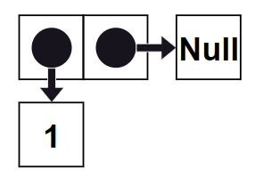

Назад
GitHub
Общая информация по проекту
Цель проекта - реализация решения задач с помощью реляционного программирования.
В проекте был использован встраиваемый логический язык miniKanren. Внешних языков, подходящих для miniKanren, очень много, в нашем проекте использовался Python.
Поиск решения в miniKanren осуществляется с помощью перебора аргументов, проверяя для каждого набора не ведут ли они себя относительно заданного отношения так, как нам хотелось бы. Эффективность перебора повышается за счет того, что перебор пользуется исключительно структурой описанного отношения.
Поиск решений в miniKanren
Пример на основе отношения объединения двух списков
Запись списков в miniKanren:
В miniKanren нет типа переменных list, поэтому списки в miniKanren записываются с помощью cons-пар.
cons-пара содержит два указателя: на значение и на следующую пару, если такая пара в списке последняя, то записывается значение Null.
a = [1] в miniKanren будет иметь вид a = cons(1, Null)

b = [2, 3] в miniKanren будет иметь вид b = cons(2, cons(3, None))
Отношение объединения двух списков:
appendo(a, b, ab) =
(a == Null) & (ab == b) |
(a == cons(h, t)) & (appendo(t, b, tb)) & (ab == cons(h, tb))
Поиск решений:
Реализация задач
В проекте реализовано:
- Решение задачи на семейное древо, ознакомиться с задачей, а также с реализацией решения можно, нажав на кнопку "Семейное древо"
- Решение загадки Эйнштейна, ознакомиться с данной задачей и решением можно, нажав на кнопку "Загадка Эйнштейна"
- Генератор загадок Эйнштейна, файл выложен на гитхаб, ссылка указана в шапке данной страницы. Ознамиться с реализацией генератора можно на странице с загадками Эйнштейна